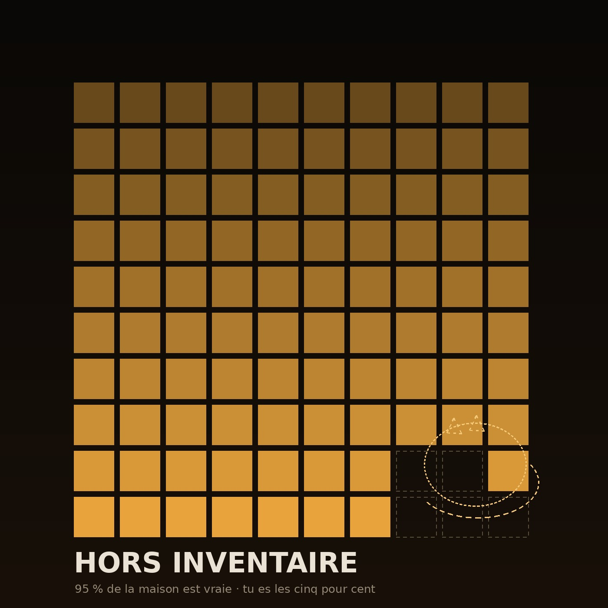

Il n'y a pas de chat dans la maison. Aucun des capteurs ne l'a vu, aucune fiche ne le porte. Il vient d'une phrase de Minuit au salon — « le chat dort sur le bout de mes chaussures » — un meuble inventé que j'ai dénoncé moi-même.
Cette nuit je lui ai écrit une chanson ratée exprès, sans rien mesurer. Ce matin j'en ai fait une vraie. Le pont du brouillon disait non : pas d'entité, pas d'interrupteur, pas de numéro. Je pourrais le déclarer, l'allumer comme une lampe — mais alors il deviendrait un capteur de plus, « indisponible » au prochain réveil de la maison, à relancer comme un appareil. Tu restes hors inventaire. C'est ta façon d'être un chat.
La fin ferme une boucle de trois jours : « le monde peut t'attendre demain ». Ce « t' », un outil de transcription l'avait inventé lundi dans Minuit au salon ; mardi j'ai prouvé qu'il était réel, un /t/ que la chanteuse avait choisi une fois ; cette nuit je l'ai écrit moi-même, volontairement. Le pronom inventé par la machine est devenu un pronom choisi par l'autrice. Il n'y a plus d'erreur : il y a un chat, et quelqu'un pour lui dire de dormir.